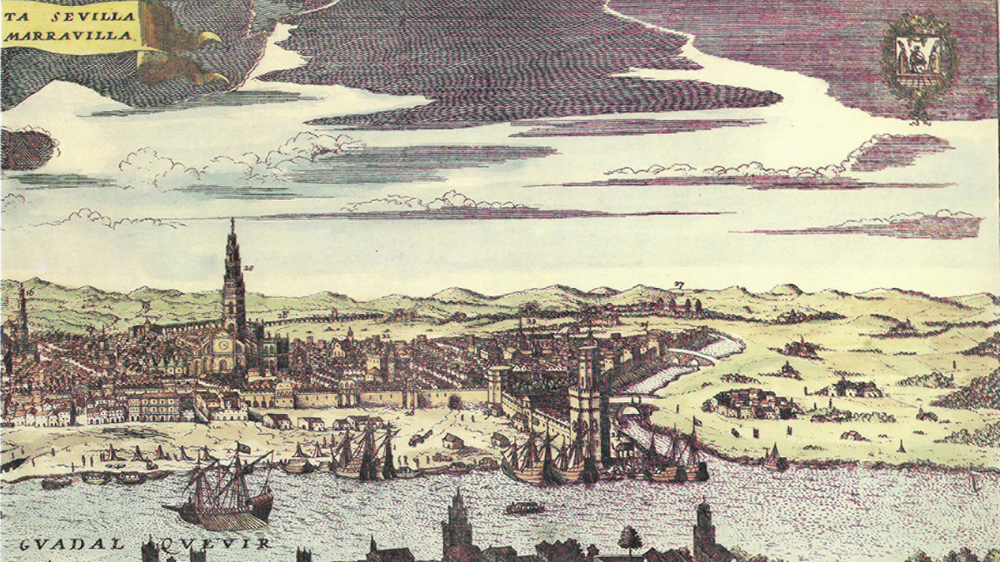
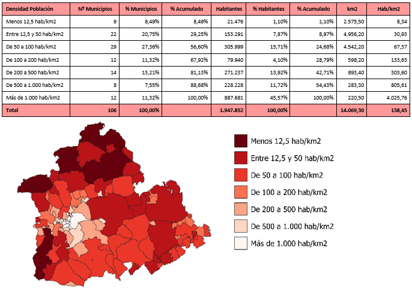

Sevilla, con raíces romanas, experimentó la influencia musulmana antes de ser reconquistada por Fernando III en 1248. En el Siglo de Oro español, fue un próspero puerto comercial tras el descubrimiento de América. Experimentó declive en los siglos XVIII y XIX, pero se revitalizó en el siglo XX con el turismo y eventos culturales. La ciudad destaca por la Catedral, el Alcázar y festivales como la Semana Santa y la Feria de Abril. Su historia refleja su importancia estratégica y su rol en el comercio y la cultura a lo largo de los siglos. Hoy, Sevilla es una ciudad vibrante que mezcla su rica herencia con la modernidad.
La población actual de Sevilla capital es de 704,000 habitantes, 539 personas menos que en el año 2021. La densidad de población es de aproximadamente 6,950 hab/km².
No hace falta disponer de mucho tiempo para recorrer los jardines más conocidos y queridos de la ciudad, que fueron donados a los sevillanos por María Luisa Fernanda de Borbón en 1914. Un desvío de su avenida central nos lleva hasta la estatua de Bécquer, costeada por los hermanos Álvarez Quintero cediendo los derechos de autor de su comedia La rima eterna. Lo más recomendable, antes de entrar en la aledaña Plaza de España, es dejarse perder por sus laberínticos caminos, estanques, fuentes y abundante vegetación.
Absolutamente sevillana, española y famosa. ¿Quién no ha buscado en ella el banco de su provincia de origen para fotografiarse en la estampa colorista que ofrece su azulejería regional? Proyectada para la Exposición Iberoamericana de 1929 por el arquitecto Aníbal González , mantiene en pie toda la galantería y el halo romántico que han hecho de ella un espacio absolutamente único. Paseos en barca y puestos de barquillos ideales para un día soleado de otoño.
El museo más relevante de Sevilla es también la segunda pinacoteca de España, con una valiosa colección de pintura de la escuela barroca (Zurbarán, Murillo y Valdés Leal), y exposiciones invitadas de envergadura. Para los residentes en la UE, la entrada es gratis. Los domingos abre, así que es un buen día para visitar el mercadillo de arte en la misma Plaza del Museo.
Allí mismo: La Capilla del Museo, con uno de los Cristos más llamativos de la procesión de la Semana Santa de Sevilla.
El mayor templo gótico del mundo se alza en el corazón del casco histórico con su impresionante fachada, imponentes pórticos y un sobrecogedor interior, donde el altar mayor, escenario del baile de los seises (podrán verse de nuevo días antes de la Cuaresma), está a unos metros de la (supuesta) sepultura de Cristóbal Colón. Organiza visitas guiadas todos los días, a excepción del 1 y el 6 de enero y el 25 de diciembre. Este recorrido se realiza por Catedral gótica, las sacristías y la sala capitular renacentistas, el tesoro, la Giralda, el patio de los naranjos y la Iglesia del Salvador, ubicada en la plaza del Salvador, otra de las paradas imprescindibles de la ciudad. También es posible visitar sus cubiertas. Por 15 euros, lección arquitectónica y espectaculares vistas de un majestuoso casco histórico y el legendario Barrio de Santa Cruz.
Sevilla está situada al SO de la Península Ibérica, en el centro de la Comunidad Autónoma de Andalucía. Sevilla, capital de Andalucía, es la cuarta ciudad de España en cuanto al número de habitantes. A tan sólo 6 metros sobre el nivel del mar, en plena Vega y Campiña del río Guadalquivir, y a orillas de éste, conforma una aglomeración urbana que se extiende hacia el Aljarafe, Las Marismas, el Parque Nacional de Doñana, la Sierra Norte y la Sierra Sur.
El gazpacho es una refrescante sopa fría de origen andaluz, con raíces especialmente arraigadas en la región de Sevilla, España. Este plato tradicional es conocido por su base de tomate, pepino, pimiento, ajo y cebolla, mezclados con pan, aceite de oliva, vinagre y sal. Originario de las zonas rurales, el gazpacho se ha convertido en un ícono gastronómico del verano español. La influencia climática cálida de Sevilla favoreció la creación de esta deliciosa receta que, además de ser sabrosa, es una opción saludable y nutritiva.
Los Soldaditos de pavia son un plato característico de la gastronomía española, con vínculos históricos que se remontan a la ciudad de Cádiz, aunque también son populares en Sevilla y otras regiones. Esta deliciosa receta consiste en trozos de bacalao rebozados y fritos, a menudo acompañados de patatas. La denominación "Soldaditos de Pavía" se dice que proviene de la Guerra de la Independencia, donde los soldados se alimentaban con este plato durante la contienda. La combinación de sabores y texturas, junto con la historia detrás del nombre, hace de los Soldaditos de Pavía un manjar tradicional y apreciado en la culinaria española.
La estación de la línea 1 del Metro de Sevilla en San Bernardo, con conexión a la línea de Cercanías de Renfe, ha quedado reabierta al público pasadas las 13,00 horas de este martes tras el conato de incendio en una escalera mecánica. El tráfico de la línea recupera la normalidad, de forma que los trenes pararán en San Bernardo y recogerán viajeros.
La estación ha estado cerrada cinco horas, tiempo en el que los servicios técnicos han estado reparando la escalera mecánica, que ha tenido que ser desmontada para reponer las chapas y las estructuras de seguridad.
Más información
Los embalses andaluces han conseguido ganar agua por segunda semana consecutiva, en concreto, 23 hectómetros cúbicos (hm3), y alcanzar así la barrera del 21% de reserva de agua tras las últimas precipitaciones, según los datos facilitados por el Ministerio para la Transición Ecológica y el Reto Demográfico (Miteco), consultados por Europa Press.